14) Case Study 1: libCEED#
Last time:
OpenMP Tasks
Today:
Introduction to Finite/Spectral Element Method
Matrix-free methods
2.1 MotivationlibCEED
3.1 libCEED’s operator decomposition and API objects 3.2 Performance
3.3 libCEED’s python interface
1. Introduction to the Finite/Spectral Element Method#
In Finite Element Methods (FEM) formulations, the weak form of a Partial Differential Equation (PDE)-which involves integrating all terms in the PDE over the domain-is evaluated on a subdomain \(\Omega_e\) (element) and the local results are composed into a larger system of equations that models the entire problem on the global domain \(\Omega\).
A finite element space is a function space in which each function is approximated with a finite-dimensional polynomial interpolation in each element. A Spectral Element Method (SEM) is a high-order (“exponential/spectral”) FEM, in which the nodes are non-equispaced.
Most FEM/SEM packages use polynomials as basis functions to approximate a given function (e.g., solution state). There are different ways of defininig basis functions: nodal basis functions and modal basis functions. Most FEM/SEM packages use nodal basis functions (e.g. by using Lagrange interpolation), which are defined via the values of the polynomials at particular nodal points in each element (termed Finite Element nodes).
For an overview of function approximation via interpolation and quadrature, please refer to the relevant Comp526 Interpolation and Quadrature lectures. Recall how Gauss-Legendre quadrature is defined:
We approximate the integral of a function \(f(x)\) by a weighted sum of function values:
where \(w_i\) are the weights defined as
the Lagrange interpolating polynomial with \(n\) interpolating nodes, and the quadrature nodes \(x_i\) are the roots of the \(n\)-th Legendre polynomial on \([-1,1]\).
In CG SEM formulations, Gauss-Lobatto nodes are preferred because they include nodes at the endpoints \(-1\) and \(1\), hence ensuring continuity of the basis functions across element boundaries. This gives rise to Legendre-Gauss-Lobatto (LGL or GLL) quadrature.
Even though the basis functions can interpolate globally, it’s better to limit each function to interpolate locally within each element, so to avoid a dense matrix system of equations when adding up the element contributions on the global domain \(\Omega\).
The Finite Element nodes can be chosen to coincide with those of a particular quadrature rule, (this is referred to as using collocated nodes) which allows us to integrate functions over the domain without having the souble cost of defining the interpolating polynomial nodes and the quadrature rule nodes.
Let us give a concrete example of strong and weak form of a PDE.
A Poisson’s problem (in strong form) is given by
To obtain the weak form, let us multiply all terms by a test function \(v\) and integrate by parts (i.e., apply Gauss’ divergence theorem in multiple dimensions):
Often, we choose to represent a field (say, the velocity field) such that \(\nabla u \cdot \hat{\mathbf n} = 0\) for which all boundary integrals would cancel each other at neighboring elements and boundary of the domain, so that we’re only left with the volumetric parts of the equation above. This holds in Continuous Galerkin (CG) formulations, whereas boundary integrals do not vanish - and need to be solved for, using Riemann solvers - in Discontinuous Galerkin (DG formulations.
Most SEM packages use the Legendre-Gauss-Lobatto (LGL) quadrature nodes that we have seen earlier in the course amd take advantage of tensor-product basis functions on quadrilateral or hexaedral elements.
2. Matrix-free methods#
2.1 Motivation#
Historically, conventional high-order finite element methods were rarely used for industrial problems because the Jacobian rapidly loses sparsity as the order is increased, leading to unaffordable solve times and memory requirements.
Recommended Reading: Efficient Nonlinear Solvers for Nodal High-Order Finite Elements in 3D
This effect typically limited the order of accuracy to at most quadratic, especially because quadratic finite element formulations are computationally advantageous in terms of floating point operations (FLOPS) per degree of freedom (DOF) despite the fast convergence and favorable stability properties offered by higher order discretizations (see below).
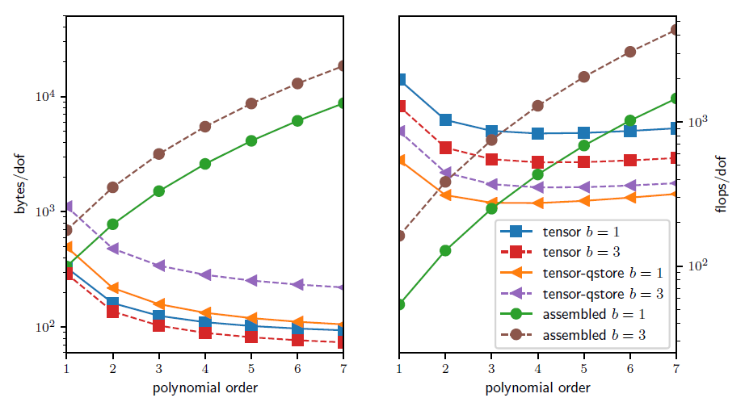
In the figure above, we analyze and compare the theoretical costs, of different configurations: assembling the sparse matrix representing the action of the operator (labeled as assembled), non assembling the matrix and storing only the metric terms needed as an operator setup-phase (labeled as tensor-qstore) and non assembling the matrix and computing the metric terms on the fly and storing a compact representation of the linearization at quadrature points (labeled as tensor). In the right panel, we show the cost in terms of FLOPS/DOF.
This metric for computational efficiency made sense historically, when the performance was mostly limited by processors’ clockspeed.
A more relevant performance plot for current state-of-the-art high-performance machines (for which the bottleneck of performance is mostly in the memory bandwith) is shown in the left panel of the figure, where the memory bandwith is measured in terms of bytes/DOF.
We can see that high-order methods, implemented properly with only partial assembly, require optimal amount of memory transfers (with respect to the polynomial order) and near-optimal FLOPs for operator evaluation.
Thus, high-order methods in matrix-free representation not only possess favorable properties, such as higher accuracy and faster convergence to solution, but also manifest an efficiency gain compared to their corresponding assembled representations.
Nowadays, high-order numerical methods, such as the spectral element method (SEM)-a special case of nodal p-Finite Element Method (FEM) which can reuse the interpolation nodes for quadrature-are employed, especially with (nearly) affine elements, because linear constant coefficient problems can be very efficiently solved using the fast diagonalization method combined with a multilevel coarse solve.
3. libCEED#
Motivation:
For decades, high-order numerical methods have been considered too expensive
A sparse matrix is no longer a good representation for high-order operators. In particular, the Jacobian of a nonlinear operator is known to rapidly lose sparsity as the order is increased
libCEED uses a matrix-free operator description, based on a purely algebraic interface, where user only specifies action of weak form operators
libCEED operator representation is optimal with respect to the FLOPs needed for its evaluation, as well as the memory transfer needed for operator evaluations (matvec)
Matrix-free operators that exploit tensor-product structures reduce the compute work load from \(O(p^{2d})\) (for sparse matrices) to \(O(p)\), and memory storage from \(O(p^d)\) (for sparse matrices) to \(O(1)\) per degree of freedom (DOF) in \(d\) dimensions
Primary target for libCEED: high-order finite/spectral element methods (FEM/SEM) exploiting tensor-product structure; but it can also work with other discretizations
Open source (BSD-2 license) C library with Fortran, Python, Julia, and Rust interfaces
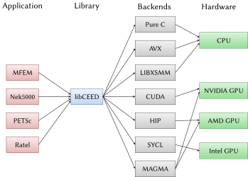
The figure above illustrates the role of libCEED as a lightweight, portable library which provides a low-level API for efficient, specialized implementations. libCEED allows different applications to share highly optimized discretization kernels.
3.1 libCEED’s operator decomposition and API objects#
As mentioned above, in FEM/SEM formulations, the solution is evaluated on a subdomain \(\Omega_e\) (element) and the local results are composed into a larger system of equations that models the entire problem on the global domain \(\Omega\).
libCEED’s API is defined in terms of decomposition (and composition) of operators.
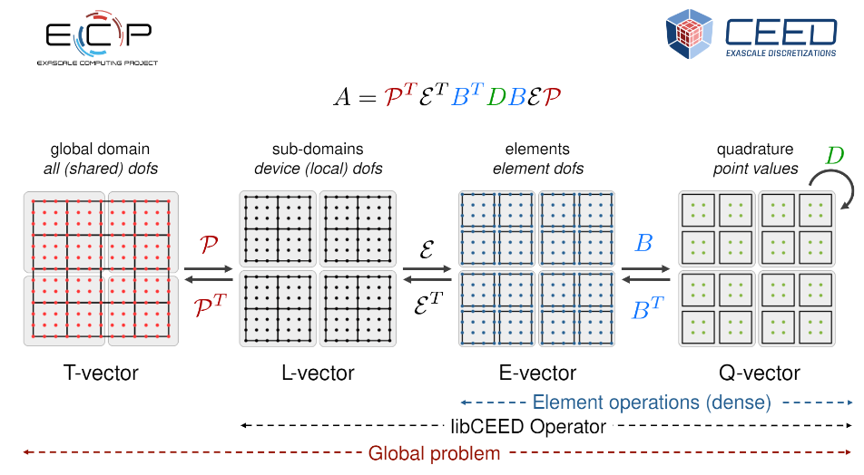
Each of these operators are then composed to form the PDE (in weak form) that describes a physical process.
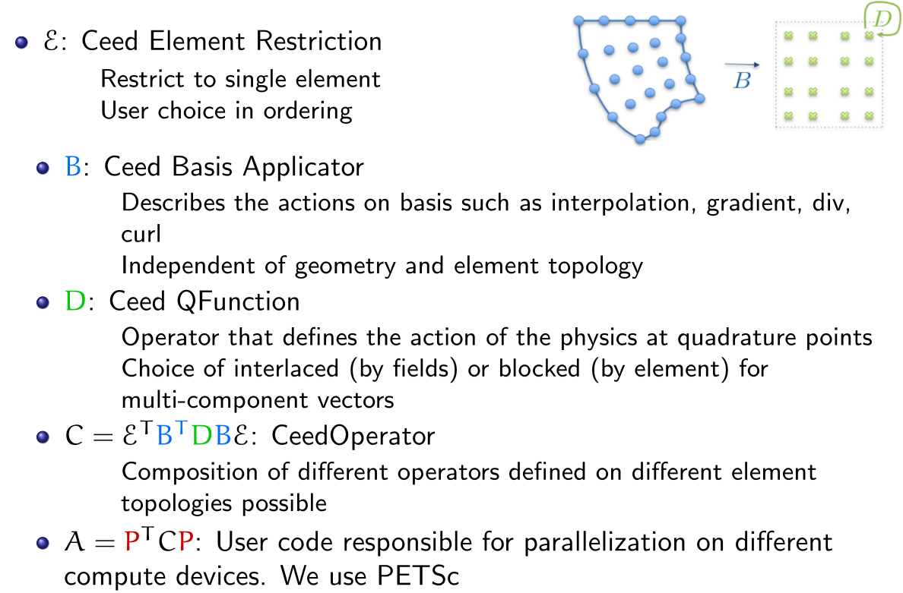
In libCEED’s decomposition, the operator describing the “physics” of the problem is defined by \(D\), and is applied only point-wise on quadrature nodes. Therefore, the point-wise functions are called “\(Q\)-functions” in libCEED’s terminology.
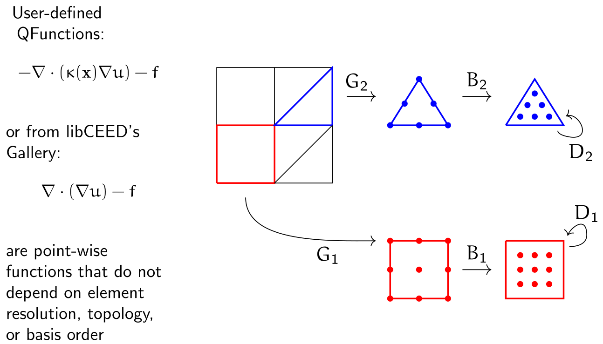
There are six main API objects (classes) in libCEED:
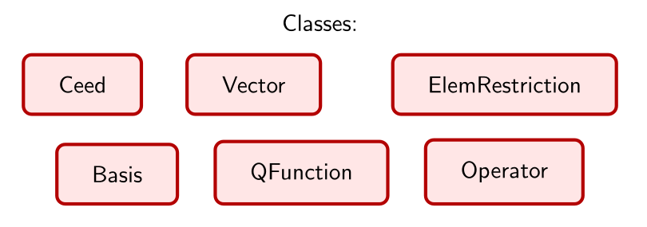
3.2 Performance#
To measure performance, a set of benchmark (bake-off) problems have been defined:
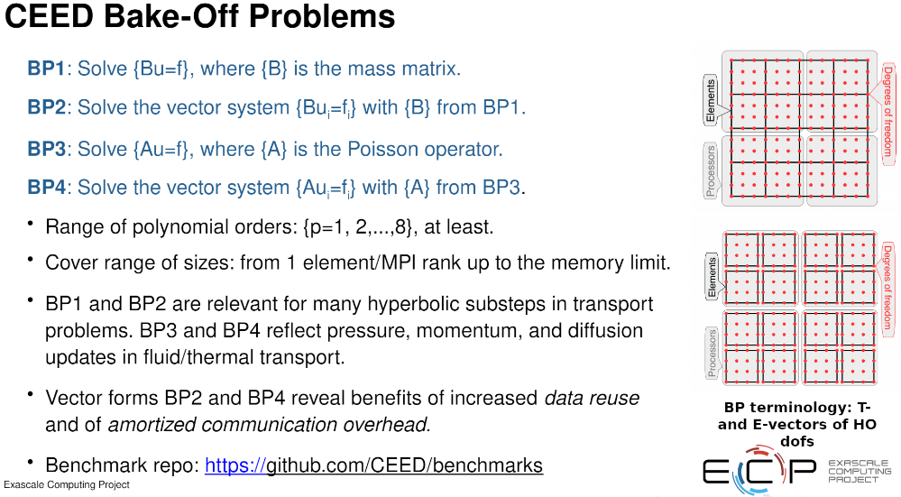
In what follows, we will present some performance plots for BP3 (i.e., a Poisson’s problem in \(3\)D). The numbers (i.e., peak performance) attained are now outdated. But we will focus on the big picture of the performance behaviors observed.
In libCEED’s terminology, “serial” means that the physical operator has been applied to one element at a time, not serially/sequentially. All the results presented here use parallel computations on multi-processor systems with the Message Passing Interface (MPI) and different levels of optimizations/backends that can be selected at runtime (i.e., without having to recompile your code).
The
/cpu/self/*/serialbackends process one element at a time and are intended for meshes with a smaller number of high order elements. The/cpu/self/*/blockedbackends process blocked batches of eight interlaced elements and are intended for meshes with higher numbers of elements.The
/cpu/self/ref/*backends are written in pure C and provide basic (“vanilla”) reference functionality without any optimization.The
/cpu/self/avx/*backends rely upon AVX instructions to provide vectorized CPU performance.The
/cpu/self/xsmm/*backends rely upon the LIBXSMM package to provide vectorized CPU performance, optimized for matrix-matrix multiplies.The
/gpu/cuda/*backends provide GPU performance strictly using CUDA.
In the performance plots below, we measure efficiency on the \(y\)-axis and use different spectra on the \(x\)-axis, mainly, problem size in terms of points (or degrees of freedom - DOF) or time. The efficiency on the \(y\)-axis is measured in terms of
Reference backend on CPU, serial implementation, processing one element at a time (left) Vs blocked (right):
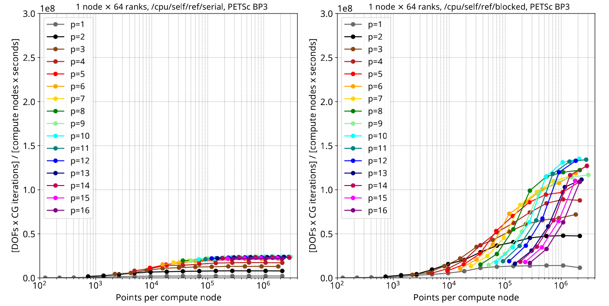
Q: Where do we see the strong-scaling regime in these graphs?
Reference backend on CPU, serial implementation, processing one element at a time (left) Vs blocked (right), but with time on the \(x\)-axis:
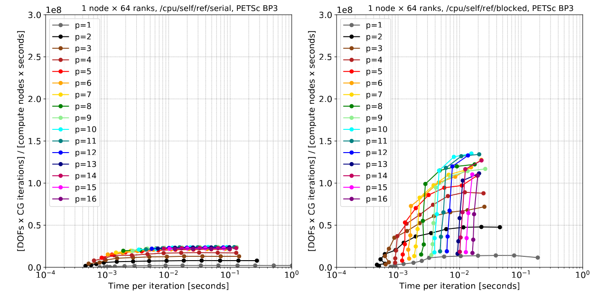
AVX backend on CPU, blocked implementation with time on the \(x\)-axis (left), and points on the \(x\)-axis (right): (Notice the \(y\)-axis units! From this graph onward we have GFlops as unit)
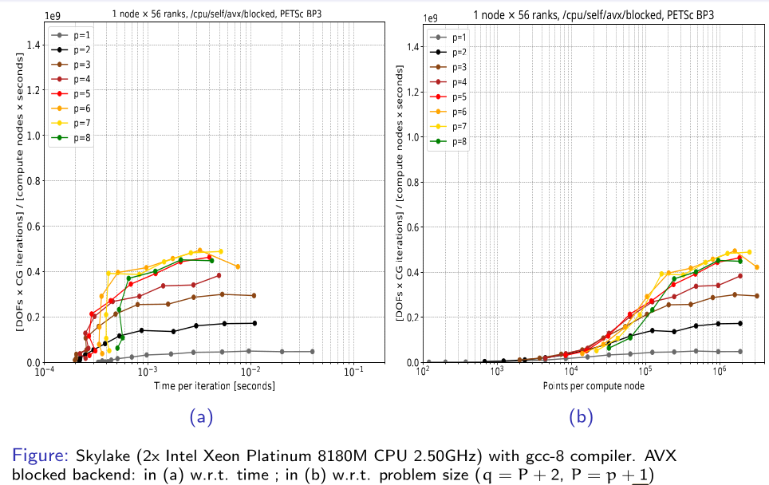
XSMM backend on CPU, blocked implementation with time on the \(x\)-axis (left), and points on the \(x\)-axis (right), on a Skylake architecture:
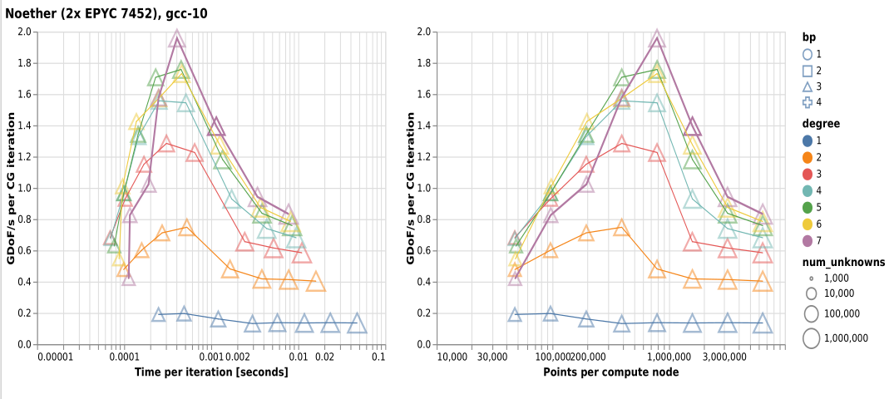
Q: Why the performance drops? What are they due to?
CUDA backend on GPU, blocked implementation with points on the \(x\)-axis:
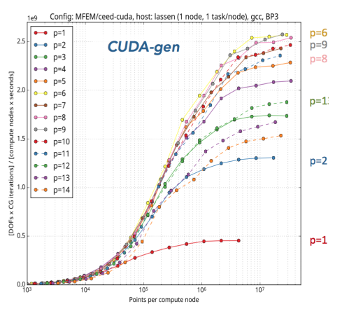
3.3 libCEED’s python interface#
libCEED’s python interface was developed using the C Foreign Function Interface (CFFI) and you can set the underlying vector’s arrays via
numpy(on CPUs) ornumba(on GPUs)
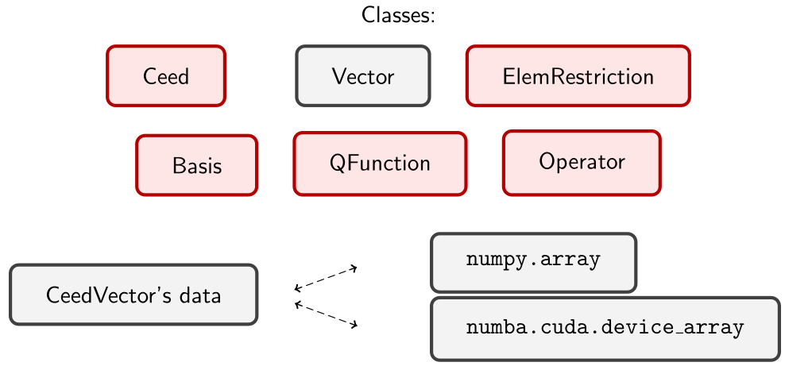
You can simply initialize a vector of a given length:
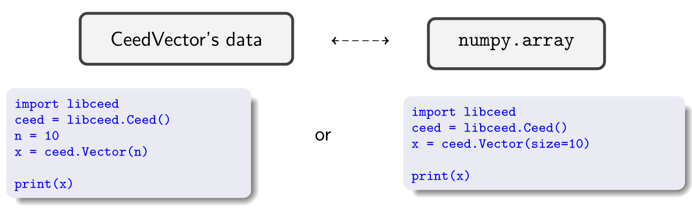
Example: Set Vector data and Element Restriction operators
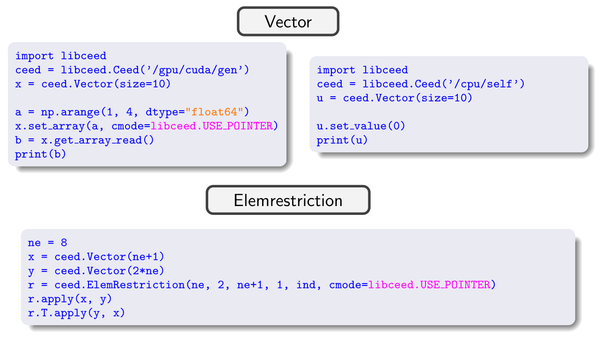
Compare the C and Python (more user-friendly) APIs:

Recommended Readings:
For more details on the Python interface, check this SciPy 2020 paper.
For everything else, including detailed descriptions of examples, see libCEED’s documentation.